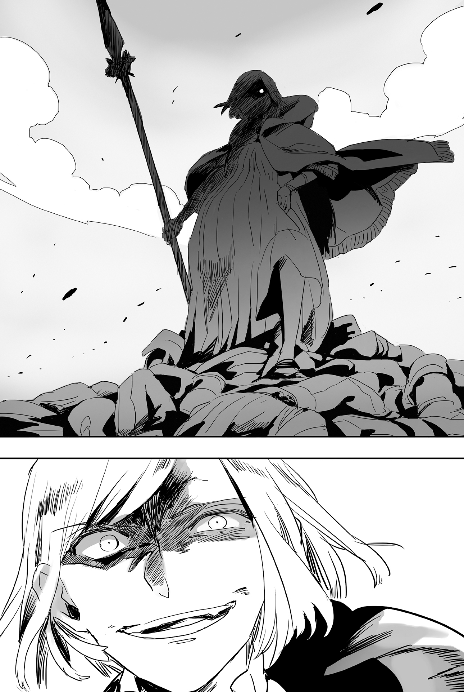

Chapter 5 – At the End of the Battle
.
Part 1
Baldr ran his horse fast and arrived at Guiness’s location when it was late at night.
「Oi oi, what’s your business here at this late?」
Guiness already went to bed at this time. He rubbed his eyes sleepily while welcoming Baldr into his house.
「It’s lucky that Guiness-san didn’t evacuate.」
「Only someone like you will come to a house deep in the mountain like this by choice.」
It seemed that Guiness still paid some attention to his attitude toward the feudal lord after a fashion, because he didn’t say anything further than that and handed a glass of ale that he took from an earthenware pot inside the house with dirt floor.
「Thanks.」
Baldr drank the ale in one gulp in reflex.
The sweet and refreshing taste of ale felt like it was permeating gently into his fatigued heart.
「──Now then, what is your business with me?]」
「Guiness-san is the one who know best about this mountain. You should know about the mine here too.」
「It was a mine from when I was still a youngster you know? My memory of it has faded a lot……」
Guiness looked up at the ceiling and narrowed his eyes to recall the past a long time ago.
The quality of the iron ore from the mine here couldn’t be called as good even as flattery. Because of that the mine died out and got closed in the end. But that mine was a precious source of income at that time.
When mining, no matter where the mine was located, the tunnel would become covered with water even when the ore’s vein hadn’t run out. And if the mining hit a place with weak ground, it would become difficult to mine further than that.
Even if the mining was easy at the beginning, the longer the tunnel became, the greater the cost to maintain the old tunnel and dig a new tunnel would become.
At his youth Guiness was also spending his days entering tunnel in order to obtain wage for his livelihood.
「Please strain your memory and recall all about the mine somehow. I want you to recall a place inside the mine that is close to the mountain’s surface and with a tunnel that isn’t submerged in water, and it will be even better if the place is located as deep as possible……」
「What are you going to do with that kind of spot?」
「I want to try causing a huge landslide.」
「Are you insane?」
Landslide was a nightmare for those who lived in mountain.
Trying to cause such thing intentionally didn’t sound like a god fearing act.
「I can’t think of any other way than this in order to face that large army.」
Baldr made a dry smile with a troubled expression, but he was filled with trepidation at the inside.
To be honest he couldn’t imagine that a landslide would conveniently occur just by exploding gunpowder.
He also couldn’t experiment beforehand. And past precedent wouldn’t be any use for this.
Even so Baldr couldn’t think of any other idea that would allow him to contend with Haurelia army using the limited time and material in his possession right now.
「……It looks like you’re still sane. Good grief, you’re the only one who will have the idea to use landslide in war……」
Guiness shrugged in astonishment and gulped down his alcohol.
He needed the power of alcohol to lift up the spirits of his body that felt chilled by the vague fears from Baldr’s idea.
「It has been more than thirty years ago since I last worked in the mine. Right now I’m using it as a beer storage but……I can’t guarantee that there is still tunnels remaining there.」
.
Part 2
The next morning, a report arrived to King Louis who was starting to advance with his army. It said that Antrim army was retreating to Mountain Range Morgan.
「So even that guy is finally running out of option.」
Louis felt relieved instead to hear such report.
Baldr had fought that hard using such absurd methods. They didn’t know what kind of trick he would have available to him in his Gawain Castle.
With him abandoning that castle and running away, it was only logical to deduce that Antrim didn’t have any more plan remaining to hold back Haurelia’s large army.
Besides even though Antrim army had the home advantage, it was a self-evident truth that a pursuing army was faster than a fleeing army.
「He won’t get away until he pay back all his debts.」
If Baldr abandoned his subordinates and escaped alone, it wouldn’t be easy to capture him.
However even though he was a hateful enemy, Louis believed that Baldr wasn’t a person with small caliber who would sacrifice his ally to protect himself.
「Make the soldiers hurry. Also……call Arseille here.」
Haurelia Kingdom had a total of seven knight orders. Black, white, blue, red, yellow, green, and the last one was the Golden Dragon Knight Order that supervised all of the knight orders.
Arseille Rouletabille(アルセイユ・ルレタビーユ) was effectively in control over the kingdom’s knight orders as the commander of Golden Dragon Knight Order.
He was 48 years old this year. White hairs had started getting mixed in on his head, but his sharp gaze and muscular body of steel looked like they were refusing to waste away.
While his individual valor couldn’t be underestimated, his capability as a commander to freely control the soldiers and his thorough knowledge of the elite knights were unrivalled.
If he was just a little bit better in political discernment, the seat of the commander-in-chief should belong to Arseille.
Although for Arseille who imposed to himself the duty to be a knight above all else, he didn’t desire anything else other than his current position.
「Your majesty’s servant Arseille, at your presence.」
「Umu, the scouts reported just now that Antrim army is currently retreating toward the mountain. You shall go ahead of us and strike them.」
Louis commanded.
「By your will.」
「Catch that brat alive if possible. But don’t force yourself if it’s not possible.」
The worst case would be if Baldr got away. That would mean their defeat.
It would be better to kill him rather than allowing that to happen. That would be a great loss if considering the aftermath of the battle, but it should be better than getting too fixated to it and lose.
「──I promise that I shall act in accordance to your majesty’s wish without fail.」
Of course at the flip side it was also the show of the depth of the king’s trust toward Arseille that he would surely accomplish the order he was given.
「The Green Dragon Knight Order is to remain here and protect his majesty. Red Dragon and Yellow Dragon, follow me!」
Arseille gave the orders swiftly.
To be personally bestowed the order to lead an attack ahead of others from the king was a piece of good luck.
That Viscount Antrim was an abnormal existence that was too far removed from the concept of warrior that Arseille knew.
Arseille wished to keep King Louise as far away as possible from the battle against such abnormal existence.
There would be other people to replace him even if he died, but there was no replacement for Louis. At the very least for Arseille, there would be no replacement for the king who he offered his sword to.
「We’ll finish it before his majesty arrive.」
Arseille’s judgment as a tactical commander was completely right.
Baldr wanted to carry out his plan when the whole Haurelia army was in one place if possible.
.
When Haurelia Kingdom’s knight orders arrived at Gawain Castle, the time had almost reached 2 PM.
「Looks like we can catch their tail.」
Arseille’s eyes saw a line of troops climbing a mountain of Mountain Range Morgan at far away.
The knight orders that were centered around cavalry didn’t have the ability to carry out mountain battle at night, but there was still enough time before sunset.
There was nothing more brittle than an army that was on the run. That fact applied equally to the army of any country.
Arseille judged that it was possible to trample the enemies with only the knight orders.
「Charge!」
「Ou! This Red Dragon Knight Order shall have the honor of the first blood!」
「Just keep dreaming!」
The knight orders were unable to contribute anything at the first battle, so their fighting spirit had heightened to the peak. The magnificent death of their comrade-in-arms and superior Flandre made the flame of fighting spirit in their heart to blaze hot.
The powerful knight order that was already extolled to be the strongest classification in the continent was now baring their fangs fiercely.
.
「──Tsk, as expected the enemies also aren’t foolish.」
Baldr thought that the battle against Haurelia army would be tomorrow, but it seemed that things wouldn’t progress that conveniently.
Well, it was only natural instead that the enemies wouldn’t move following his expectation.
「Even so, the preparation to fight you guys haven’t finished yet though.」
Baldr was entering inside the tunnel. Mattis Bradford took command of Antrim army in his absence.
「Lit up the wagons at the rear! We’re going to hold back the enemies until the rest of our guys escape!」
The wagons that were loaded with fodders and foods were set on fire by Mattis’s order.
Although they were close to the foot of the mountain, the mountain road wasn’t that wide.
It could be said that approaching Antrim army while avoiding the burning wagons was a herculean task.
「Tsk, a vain struggle! Magicians, blow away those wagons!」
「Storm Bullet!」
「Magic Cancel!」
The bullets of wind that assaulted the wagons were erased before they hit.
If it was only the magicians of the knight orders, then Antrim’s magicians were able to neutralize them.
In front of the wagons that were on fire, the knights stopped moving in order to change the direction of their charging horses.
「Now! Attack!」
That timing wasn’t missed and crossbows were fired one after another.
「Kuh! Don’t think you can somehow manage against our glorious knight orders with just this much!」
The commander of Red Dragon Knight Order, Danton easily struck away the arrows, but whether the other knights were able to do the same like Danton or not was another question.
Several knights were hit by the arrows, while others got their horses hit and fell down.
The damage to the frontline brought not a small amount of chaos to the charging Haurelia Knight Orders.
「──We’re going!」
Defense using wagons on flame. And then shooting arrows using the opening to agitate the enemies.
Furthermore they even went out to attack. It was a blind spot that the enemies didn’t even consider.
Mattis was completely in control of the flow of battle.
「The former vice commander of Blue Flame Knight Order, Mattis Bradford shall educate you in how to fight.」
.
Haurelia Knight Orders were powerful, but they weren’t almighty. Against Antrim army’s overwhelmingly inferior number, they underestimated the possibility of the enemies switching to attack.
「Don’t look down on the Red Dragon Knight Order!」
Danton’s huge body that could overwhelm the average person jolted and he advanced while drawing his spear.
His method to lead his subordinates were by showing the commander’s valor at the front line even if it was reckless.
「Uwaaaah!」
Screams rose from Danton’s left and right at that time.
「Ambush-!」
Arrows were fired from both sides and several knights fell from their horses.
「Don’t falter! The enemy’s number isn’t any threat!」
However the soldiers were unable to be as calm as Danton.
Because being attacked from three directions in this narrow mountain trail was nothing but nightmare.
「The enemies are thrown into chaos! Follow me!」
There was methods to fight even with few number if they knew where the enemy would come from.
Mattis had the experience of fighting through the precious war where his side fell into disadvantage because of the rashness of the allied nobles.
Danton had no such experience. That difference was showing here.
「I WON’T LOSEEEEEEEEE!」
Danton stood on the way of Antrim army while swinging around a long spear that seemed unsuitable for use on horse. Mattis’s spear stopped him.
「At least your spirit is quite something.」
「Hmph, you old geezer should just stay at home and pat a cat!」
「I’m still not that old!」
The spear handles of the two were locked with each other and they entered a contest of strength, but surprisingly it was Mattis who won while ignoring the factor of body size and age.
「I-impossible!」
「Your strengthening training is still lacking.」
In close range combat where body strengthening using mana was commonplace, youth and stamina were not necessarily decisive factors in battle.
Rather for those who had reached the domain of maturity like Mattis, they regarded technique as the factor that was the most important.
「Mourn your own recklessness. That’s if you still have the time for it later though.」
「Uuu……shit!」
Danton was forced to acknowledge that his opponent was his superior in technique.
His spear lunged with the resolve to at least take a revenge by taking Mattis down together with him, Mattis didn’t allow even that.
Danton’s spear was knocked away as they passed each other. Then Mattis’s spear approached to land a fatal hit on his back.
「Nuuh!」
Danton leaped down from his horse to dodge that lethal attack.
Because he jumped down with a forced posture, his body struck the ground hard along with his heavy armor. Danton’s breath got blocked in his throat and he stiffened. There was no way Mattis would overlook that opening.
「I won’t be merciful.」
「──I won’t let you!」
A knight leaped toward Mattis who was approaching Danton to finish him off.
It was the commander of Yellow Dragon Knight Order, Gramond.
Just like how Mattis had learned from the previous war, Arseille had also learned the countermeasure.
Mattis couldn’t help but admire the swiftness of the enemy’s decision to send their reserve force so quickly.
「I guess I should admit that it’s magnificent.」
Gramond replaced Danton and launched a fierce attack. Even so Mattis still had the leeway to smile.
Because luring the enemies to the frontline like this was also one of his missions.
.
「Don’t let the enemy rest. They won’t be able to keep their strength forever.」
Mana wasn’t infinite. The fierce fighting of Mattis and his men shouldn’t last for even a hour.
In addition, less than one hour wasn’t enough for Antrim army to escape through the mountain trail that was extending with twisting route like a snake.
If the rearguard broke down, there would only be one-sided massacre waiting.
At the very least that should be how things developed based on Arseille’s experience.
Meanwhile…….
.
「Are you really going in? You can’t count that much on my memory.」
「The direction is mostly matching with what I want. I’ll bet on Guiness-jiisan here.」
Fortunately the tunnel in Guiness’s memory wasn’t submerged in water.
However underground water was filling the tunnel until it reached the knee. In this situation, it wouldn’t be strange if the tunnel collapsed anytime.
In the worst case, only the tunnel would crumble and buried Baldr alive while the enemies outside wouldn’t be damaged at all.
「Mattis-dono won’t be able to buy time forever. I can only do this whether it will be sink or swim.」
「……I guess. I”ll believe on your luck.」
To cause a large scale landslide, it would be better if the explosion site was close to the mountain’s foot, but all the tunnels in such location had been submerged in water.
It was lucky that there was a tunnel halfway up the mountain that was still remaining. Baldr placed all his remaining explosives in it.
「……As I thought, I’ll do it! If something happen to you then I……」
Brooks was setting up the explosives together with Baldr. When the work was finished, he turned toward Baldr with a serious expression.
「I told you many times already. With your body strengthening it’s impossible to get out of the tunnel before the explosion.」
「I know that you will make it with your skill! But you will cut it too close! There won’t be a redo for you if there is just one thing that goes wrong!」
For Brooks, it was only natural that he wanted to avoid any deathly risk to Baldr as much as possible.
He had the resolve to sacrifice his life for that.
「Brooks, what you should do isn’t to die and raise achievements. It’s to live so that you can keep helping me.」
Seeing Baldr’s expression that was half crying and half laughing, Brooks finally noticed that the burden of shouldering the soldiers’ lives was crushing his lord’s heart.
「I have one condition.」
「What?」
Brooks stared at Baldr and grinned. Although he intended to smile, his face twisted to be half crying and half laughing just like Baldr.
「──Don’t die earlier than me.」
「I can’t promise that but I’ll do my best to do so.」
「No, you should say okay there even if you have to lie.」
This time the two laughed from the bottom of their heart while looking at each other.
.
「What a brilliant commanding. As expected from Mattis Bradford. I can only feel respect even though he is an enemy.」
Arseille groaned in admiration seeing Mattis who had already defended three times against his force that was attacking in waves.
Although his impact in the war wasn’t as great as Ignis or Maggot, Mattis wasn’t an obscure opponent by any means.
It was only by accident that his achievement was plain, but his tenacity and steadiness made him an even worse enemy than Ignis.
「Even so, I also can’t just do nothing but admiring him. His majesty will run out of patience soon.」
Haurelia army that came later than the knight orders was approaching the base of the mountain.
If this stalemate continued longer than this, the foot soldiers that were more suited for mountain battle would be sent to replace them.
「Yellow Dragon Knight Order, withdraw for a moment. I won’t let that guy keep on being smug up there!」
Arseille rode his horse and spurred his force to charge fiercely.
No matter how excellent Mattis was as a general, his fatigue should have accumulated and brought him to a near exhaustion.
.
Mattis’s eyes saw that Haurelia Knight Order that had been skillfully advancing and retreating until now suddenly made a large movement.
「So you came, Arseille!」
For Mattis, Arseille was an old acquaintance as enemy general. At the previous war, Mattis faced Arseille twice and drove him back.
Because it happened at retreating battle, Mattis’s military exploits didn’t stand out, but Mattis’s skill could be said as fearsome just from his feat of repelling the brunt of Arseille’s attack.
「──My bad but I’ll overturn the table on you this time too!」
Mattis said that and lifted his left hand high in the air before swinging it to left and right.
At the same time, all members of Antrim’s magician unit that were on standby behind Mattis started chanting.
Arseille too had sensed that the magicians would try something.
「Cast Magic Cancel!」
Seeing how Antrim manipulated magic at the previous battle and sent poison to them, they should neutralize the magic even though they didn’t understand its true form.
Arseille’s judgment wasn’t mistaken by all means.
However──.
「Lighting!」
It was an ordinary magic of lighting. The light’s intensity was rapidly increasing that it started to emit an intense radiance that was like sun.
Haurelia army was showered by that radiance head on. Their eyes were immediately blinded and people falling from their horse were appearing.
Magic Cancel had several blind spots.
Magic would decay the longer the distance it traveled. Attack magic that flew toward the target would weaken the longer it flew. Magic Cancel that intercepted the attack would be more powerful because of the closer distance to the caster.
However in case the magic that should be dispelled was located far away, it would be the Magic Cancel that decayed and became unable to display its effect.
Because of that, Haurelia army ended up getting bathed in light that was bright as a flash.
「How can magic be used like this!」
Arseille instantly decided to retreat.
Mattis was approaching right at this moment to switch into offense.
Because Antrim army shouldn’t be affected by the light at all seeing that the magic was cast behind them.
However in contrast to Arseille’s expectation, Antrim army under Mattis’s leadership was dashing up the mountain with all their strength.
「Run as though death itself is hot on your tail! You are going to get swallowed up if you’re slow!」
The light magic wasn’t just for blinding Haurelia army’s eyes.
Even though the light was weakened at long distance, it undoubtedly also reached Baldr’s location that was deep inside the underground tunnel.
Baldr ignited the fuse and circulated mana through his whole body.
Baldr performed body strengthening to his optic nerve, nerve signal propagation, muscle structure, to all the parts that were necessary to display godspeed and then he broke into a sprint.
(It’ll be game over if I stumble here……)
The tunnel had been abandoned for dozens of years. It was so fragile it could collapse anytime.
And now he was going to cause explosion inside. There was no way this tunnel would still be here after this.
Seyruun, Selina, Agatha, Brooks, and all his comrades were waiting for him.
Cold sweat was drenching his back. Even so Baldr finally arrived at the exit and sunlight showered his body.
And then almost at the same time, a dull bursting sound echoed and the whole mountain shook ominously.
.
「Whaa–?」
The mountain surface rumbled. King Louis witnessed the moment when the bare surface of the mountain smoothly came off like a snake shedding its skin.
Water spurted out like fountain from the tear of the shifting mountain surface. At the same time earth and sand flooded down toward the base of the mountain with the force of surging waves.
Around half of the knight order that tried to retreat was swallowed by the earth and sand in front of Louis’s eyes.
「T-this is absurd──are you saying that this is a feat of human!?」
It was an unrealistic scene that could only be called a nightmare……even Louis’s faithful servant, the model of knight and an excellent tactical commander Arseille was helpless in front of nature’s overwhelming might.
Arseille was keeping the Yellow Dragon Knight Order and Red Dragon Knight Order at the back until the last moment when he was swallowed by the earth and sand. His action could only be said as splendid as a knight of Haurelia.
The Golden Dragon Knight Order that was extolled as Haurelia’s strongest was annihilated without even crossing swords with the enemies. The remaining Haurelia army couldn’t help but feel a strong sense of defeat from that fact.
There was no way this landslide was a coincidence.
Louis’s own ears had heard a bursting sound that seemed to be from the gunpowder that he had also heard at previous day’s battle.
How could a war like this exist? No, could something like this be called a war?
Baldr Antrim Cornelius. Who in the world are you?
.
On the other hand, Baldr wasn’t satisfied seeing the sight below him.
As expected, the depth of the explosion site wasn’t enough. Or perhaps it was because of the mountain’s structure itself. The amount of earth and sand that flowed down was less than expected.
Because of that it could only crush the Golden Dragon Knight Order. At most the victims only numbered 3000.
Also even with the bad footing after the landslide, if Haurelia army had the will for it, it was possible for them to cross the earth and sand to continue the battle.
(Those with normal nerves won’t even think to fight anymore after this but……)
Even if the landslide killed fewer than Baldr expected, its impact to the enemies’ morale was immense.
In the first place the creature called soldiers would be burning in fighting spirit in the face of their enemy, but they had an indifferent side against phenomenon like nature that they had no way to oppose.
Not to mention that Haurelia army had no way of knowing that Baldr didn’t have any more trick up his sleeves.
It wasn’t strange that Baldr was hoping that the enemies’ heart was broken with this.
.
「Don’t falter! Haurelia won’t have any future as long as we don’t defeat our sworn enemy Baldr Cornelius!」
However hope would occasionally betray people.
The one who recovered his fighting spirit before others could was Marquis Andrei Selvi who had a deep connection with Baldr too.
Marquis Selvi was burning with obsession that was similar to insanity against Mauricia. He understood that if Haurelia recognized defeat here, there would be never another battle against Mauricia anymore.
He had to at least strike a blow against his hated enemy. If not he wouldn’t have any face to meet with his sons and subordinates who died.
Selvi army started advancing fiercely as though their lord’s madness had infected them. The rest of the Haurelia army was caught up by that and recovered their fighting spirit that they almost lost.
「──Good grief, both enemies and allies just won’t move like I expect them to.」
Baldr could only smile bitterly like that no matter how much despair and disappointment filled his heart.
Like this, there was no other way than to take down that Marquis Selvi and snapped Haurelia army’s morale once more.
Baldr exchanged gaze with Mattis and they were going rush downhill to plunge into Selvi army. It was at that timing,
「That’s cold……isn’t it me who is your sworn enemy, lord viscount?」
A gust of wind whirled and something appeared like it was teleported there. Several knights of Selvi House who were running at the front lost their lives without knowing what had happened.
Baldr’s eyes reflexively widened seeing that scene that he should be familiar with.
There was a person there who shouldn’t be there.
「Silver Light……Maggot……!」

Andrei could only squeezed out that whisper from between his gritted teeth.
He was unable to suppress the muddy black grudge that spurted out from inside his chest.
Andrei even felt joy because the time to finally fulfill his revenge had come after so many years.
「Kill! I’ll kill you! I’ll kill you as gruesomely as possible!」
Baldr rushed in panic toward Selvi army that was approaching Maggot.
「That person! What is she doing!」
Even the Silver Light Maggot would find it difficult to fight this many soldiers with her body that wasn’t in the best condition.
Baldr and others hurriedly ran down the mountain road that had turned into quagmire while even forgetting the danger they were in.
When Haurelia army’s main force started moving to surround Baldr, they witnessed new enemies appearing from an impossible direction.
It was a crowd of soldiers that squirmed orderly on the plain. Their number was roughly more than 7000.
Riding her horse at the forefront of them was a beautiful girl who seemed to be at her teens.
Impossible. That thought that had come up in their mind many times during the battles at this Antrim painfully appeared in Haurelia army’s mind once more.
──Furthermore it appeared in the worst form.
Louis yelled toward the sky with an emotion that had already gone past fury.
「O god! What kind of magic they are using that the army of Randolph House appeared from the direction of my Haurelia Kingdom!?」
.
Part 3
Haurelia Kingdom had spent ten years to build an intelligence network within Mauricia Kingdom.
All the troops heading toward the border were held back by the nobles in anti king faction. There shouldn’t be any other reinforcement except for Viscount Bradford who crossed the mountain.
「The world isn’t that kind that things will only goes following your own expectations.」
Alford Randolph sneered at Haurelia army that was falling apart pathetically.
Although as expected, he would also be as flustered as them if he was the one standing on their position.
.
Several days ago, Alford was given a single plan by Welkin.
「We’re going to……traverse through Sanjuan Kingdom and attack Haurelia from there?」
「Yeah, I have talked with King Carlos of Sanjuan. It looks like they will also prepare the supply for food, fodder, and water from their side. It’s really generous of them.」
Sanjuan Kingdom had a wide territory that stretched from east to west. That territory was bordered with four countries of Trystovy, Mauricia, Haurelia, and Mornea(モルネア).
Certainly if they cooperated with Sanjuan Kingdom, it would be easy to attack the completely defenseless southern part of Haurelia Kingdom.
「That’s indeed very generous of them. And, what is the reason of this hospitality of Sanjuan?」
「It seems that it’s a congratulatory gift for Prince Franco’s marriage. Well, their true motive must be that they don’t want that brat to be killed.」
Welkin was realizing that Baldr had an intimate connection with Sanjuan Kingdom as well as Majorca Kingdom’s navy.
Furthermore it was said that Majorca Kingdom’s navy minister was deeply in love with Baldr and she was scheming to marry him, so it made him felt a bit conflicted as Rachel’s father.
「An invasion from a completely unexpected direction……furthermore if they see that Sanjuan Kingdom is helping us, Louis’s head will cool down immediately.」
After that they only needed to use diplomatic negotiations to make Haurelia accept advantageous conditions for Mauricia Kingdom.
That was Welkin’s plan.
In the first place their alliance with Sanjuan Kingdom wasn’t just for opposing Trystovy Dukedom, it was also a security guarantee against Haurelia Kingdom.
Louis most likely also noticed that, but seeing that Franco’s marriage partner was just a daughter of insignificant viscount, he might have underestimated the alliance between both countries.
For Sanjuan Kingdom, Haurelia Kingdom was also an important trade partner. Louis thought that the correct way a maritime nation should act in this situation was to keep a neutral position and focused their effort in exportation.
Louis’s assumption wasn’t actually that off base.
However the charm from the expansion of textile industry, various kinds of preserved food, and new technologies that Baldr spearheaded simple exceeded that.
「I don’t know what to say……without that brat, I can’t imagine what would happen to our country.」
「Perhaps it would become a war of attrition that ravage our territory.」
Even though just the great victory at Antrim was already a great exploit that would be recorded in history, the diplomatic victory that Baldr brought also wasn’t inferior at any way.
The problem was the current situation and how to treat him after this.
「I don’t want to consider it but……he won’t plot to overthrow the government or anything right?」
Welkin had the awareness that he had given Baldr impossibly difficult tasks one after another. His smile seemed to be convulsing.
「If it’s that brat then he should understand the political position that your majesty is placed at. There won’t be any problem if your majesty rewards him lavishly after the war is over.」
Although it was unknown how that mother would act, Alford muttered with a small voice.
「I-indeed! I’m entrusting him with important duties only because I have faith on him!」
「If there is just a single thing that goes wrong, then what your majesty did won’t be any different then death sentence though.」
「H-he will understand why I did what I did!」
The prime minister Harold was also someone who had experienced going through needless hardships because this king took a liking to him.
Alford quietly prayed to god for Harold and Baldr’s sake.
Though he thought that there was no way his prayer would reach.
.
Originally, the war should finish at the early stage if Alford rampaged at Haurelia Kingdom’s southern part.
Because King Louis wasn’t a foolish man who would continue the war even if he had to turn his own territory into battlefield while there was still an uncertain factor that was Sanjuan Kingdom threatening them.
This tactic was truly an 『insurance』 just as Welkin said.
But, Antrim’s absurd great victory overturned that prediction.
Louis saw through that Antrim was the true lifeline of Mauricia and decided to give his all in order to remove the threat.
Naturally the nobles at the southern part also gathered all their troops and participated in the battle. What Alford found when he arrived was a Haurelia Kingdom that was almost completely deserted like an empty house.
In this situation, it became impossible to carry out the plan to lead around Haurelia Kingdom army by the nose at the southern part.
Alford then accurately discerned how the situation had progressed and decided to use this chance to end the war itself even more decisively.
He rushed north until Antrim without stopping while exterminating the enemies’ messengers and took the defenseless back of Haurelia main army.
If he succeeded, it should be possible to reduce the military tension between Mauricia and Haurelia Kingdom for a period of a hundred years.
On the way Alford absorbed Cornelius army and his army swelled up until it numbered more than 7000. And so Randolph army splendidly carried out a successful ambush.
.
「Don’t be flustered! The enemies are few in number! Surround and annihilate them!」
The order of Haurelia army’s general Rochambeau was perfectly correct.
However the majority of the knight orders had been dispatched to the frontline against Antrim army. That decision backfired here in a fatal degree.
Armies that fell apart after being pincer attacked were too many to count throughout history.
Even if they had twice the amount of soldiers than the enemies, the locked up feeling and the psychological impact from having their path of retreat severed had smashed the soldiers’ morale.
It was only natural that the agitation of the militias that occupied the majority of Haurelia army couldn’t settle down.
「The enemies aren’t taking defensive formation against magic! Start firing support attack magic!」
In addition the majority of the magicians were focused at the front in order to deal with Antrim army’s magic. It was a disaster for Haurelia army.
Flame explosion rained down from the sky one after another. The chaos in Haurelia army was growing even bigger from it.
「Protect his majesty!」
Green Dragon Knight Order that stayed behind by itself formed the center of the defense.
「Call back the magician unit! We’re pushing back Marquis Randolph’s army!」
.
「──Is it alright? Your allies are running away and leaving you behind you know?」
「Only you-……you are the only one who I won’t let get away!」
「I’m the one who won’t let you get away!」
The whole army of Marquis Selvi rushed toward a female warrior who was facing them in her lonesome.
However all the attacks from the countless soldiers didn’t do anything against Maggot. She piled up dozens of corpses in the blink of eye in defiance of their attacks.
『What a terrifying mother. She is like the personification of Empress Jinguu.』
It couldn’t be helped that Sanai unconsciously ran off his mouth like that.
Her stomach was so large that it wouldn’t be strange if the time for childbirth arrived any time, and yet she was continuing to consign the soldiers to oblivion with fierce gleam in her eyes. Such figure could only be called as surreal.
To tell the truth, her stress had been accumulating steadily all this time because she had to refrain from training for a while.
Empress Jinguu was the wife of Emperor Chuuai. There was a story of her receiving an oracle and went to an expedition to Korean peninsula. Because of her pregnancy, she held a stone on her stomach to delay giving birth.
She then returned to her country and gave birth to Emperor Oujin. It was said that red and white cloth fell down from the sky when he was born. The red and white hanging banner for lucky charm was based on this folklore.
It wasn’t strange for Sanai to be reminded of Empress Jinguu when he watched Maggot fighting with her stomach shaking like that.
「This isn’t the time and place for that!」
For Baldr, she was his important mother. At the same time the life of his little brother or sister who hadn’t been born yet was inside her stomach.
Both armies clashed with both sides unable to back down.
Selvi army numbered around 3000, in contrast Antrim army numbered around 800──and one superhuman.
Normally it wouldn’t even be a fight with this difference of number.
However it was Antrim that was in advantage as the fighting progressed.
「Don’t falter! There is no way that witch can continue fighting forever!」
Selvi army’s commander, Omal gave the order with a sour face seeing Maggot throwing the battlefield into chaos as she pleased.
Maggot was a symbol of disaster for Selvi House.
If they simply wished to obtain victory, they should leave behind the minimum number of soldier to hold back Maggot while focusing their full strength to eradicate Antrim army.
「MY SON! I’M GOING TO TAKE REVENGE FOR YOUUUUUU!」
Even so the circumstance of Selvi House didn’t allow that. The situation was worsened by the marquis who was losing his reasoning at present.
「Aim at the vanguard of Antrim army! Tore apart that witch’s son gruesomely to show her!」
He wanted to agitate Maggot with that.
Omal targeted Maggot and Baldr at the same time, but both of them were too strong to be preyed on.
For the two, they were the hunter while it was Selvi army that was actually the prey here.
「Too slow too slow! How can you invite a woman to a dance like that!」
「THAT STUPID MOTHERRRRRRR!」
It was completely chilling for Baldr each time he saw Maggot being exposed to enemy’s spears.
There was a saying that no child knew how their parent felt, but in this situation, perhaps the more correct saying would be no parent knew how their child felt.
Maggot ignored Baldr’s anxiety while completely being in her element.
「AAA HA-HA-HAAA!」
.
Selvi army was continuously being bounced back atrociously like wave being scattered when crashing on a large rock.
Maggot’s martial art was truly at the realm of monster. Antrim army that was moving like a single entity under the leadership of Baldr and Mattis was also not giving any opening for Selvi army to take advantage of.
It didn’t stop there. Antrim army that was led by Baldr was already approaching Omal’s position.
At this rate Selvi army wouldn’t be able to avoid their lord marquis getting dragged into the battle.
Omal stared at the main force of Haurelia army that was at far distance.
The appearance of Randolph army had thrown their calculation into chaos. The soldiers were starting to desert the army.
Not only they were unable to expect any reinforcement from their ally. If the battle kept getting prolonged like this, Selvi army would get isolated in the middle of enemies.
「──Dorun-sama, I’ll leave our lord in your care.」
「What are you saying Omal? I won’t move from here until that witch die!」
「I shall take down our sworn enemy even if it cost me my life. In order to do that, I have to ask my lord to leave from here.」
「Unacceptable! I won’t accept something like that!」
Andrei yelled that, but Dorun and his guards solidified their formation and turned their back simultaneously toward Omal.
They had received Omal’s unsaid feeling.
Most likely Omal didn’t intend to meet them anymore in this life.
「My gratitude, Dorun-sama.」
「Omal, may fortunes of war accompany you. ──Forgive me!」
Dorun was filled with heartrending grief, but as a retainer who had served Selvi House for multiple generations, he had to prioritize Andrei’s life.
They began to move toward their ally’s main force even while Andrei was struggling. After seeing that, Omal glared at the goddess of the battlefield who fought like a flash as always.
「You damn witch, I won’t let you keep that smug look forever!」
.
The battlefield was getting further away.
The sounds of armors scrapping each other from tens of thousands of soldiers crowding together became a low rumbling sound that echoed in the battlefield.
There was a single goddess who was shining radiantly amidst that.
She had a beautiful form, but she looked like the jaw of the death god for those who were opposing her.
Marquis Selvi’s army was rushing her to take revenge for their family, friend, or perhaps superior. And yet they only increased the pile of dead bodies in vain.
At this rate, wouldn’t they ended up simply as this witch’s kill count to bolster her achievement?
Andrei was being dragged by Dorun and his men while staring at the battlefield in despair.
The main army was already under attack of Randolph army. The majority of the foot soldiers were starting to desert.
The remaining troops were only numbering 20000 or less already.
It was clear to anyone’s eye that Haurelia army was already worn down until less than its original number and there was no way for it to regain its footing.
Today would become their last battle against Mauricia. There wouldn’t be any more chance.
Andrei understood that well. That even if he survived this battle, he would only live a life as a living corpse from here on.
「……Dorun.」
Andrei spoke with a hoarse voice like an exhausted old man. Dorun suppressed the pity that throbbed in his chest and hardened his heart before answering his lord.
「I will accept any kind of punishment later. However the most pressing matter right now is to save Andrei-sama’s life at all cost!」
Dorun not only had served Selvi House for very long, he was also a childhood friend of Andrei, a school friend, and also a comrade-in-arms.
Andrei understood that Dorun was only thinking of his wellbeing from the depth of his heart.
However if this war ended, it would be difficult for Selvi House to continue existing.
Because Selvi House was the main advocate of the pro war faction. He was no one else than the ringleader who spearheaded this war effort.
Perhaps it wouldn’t go as far as Andrei losing his life as the consequence, but there was no doubt that he would at least get punished.
Dorun was telling him that he had to live even then.
It was truly a loyalty that he was grateful to receive. Dorun was a loyal retainer with a splendid selfless devotion that was very hard to obtain.
If this was a peace time, Andrei could shower Dorun with every word of praise and it still wouldn’t be enough.
But, it was only at this time that he couldn’t do that.
In order for Andrei to keep being Marquis Andrei Selvi, he couldn’t possibly accept surviving while feeling inferior against that witch.
Resignation and hatred and gratitude and parting regrets──various emotions came and left inside Andrei’s chest.
「──Forgive me. Farewell, my friend Dorun.」
「──What!」
Just when he thought that his lord had calmed down, Andrei suddenly took out his sword. Dorun could only watch with disbelief.
His lord wouldn’t go as far as drawing out his sword no matter how much he was struggling. Yet his trust was betrayed──no, Dorun realized that it was none other than him who had betrayed Andrei.
「D-does my lord wish to settle your debt with that woman to this degree?」
Andrei gently embraced the dying Dorun.
「Go ahead and wait for me. I’ll apologize to you in that world.」
「──May the fortunes of war, be with you.」
Dorun could just barely say that and expired.
Andrei quietly prayed. Then he scolded his subordinates who were frozen by the shocking scene.
「What are you all doing with that stupid look on your face! We are turning back right away to kill that witch!」
.
Omal believed that he had comprehended just how difficult it would be to take down Maggot, even so it seemed he was still underestimating her somewhere in the corner of his heart.
Omal couldn’t hide his shock seeing the damage to his troops that was rapidly increasing.
Someone once judged that the Silver Light Maggot alone was equal to a battalion, but it was easier to annihilate a single battalion than Maggot alone in a sense.
There was nothing worse than witnessing allies getting butchered one-sidedly to lower the troops’ morale.
If they could at least land an attack on Maggot, even if it was just a scratch by a fluke, then it would be just a matter of time before they managed to take her down.
The impatient Omal was assaulted by even more shock.
Top notch knights that included Mattis, Brooks, Nelson, and also Baldr were leading their subordinates to bit at the flank of Selvi army.
The average soldiers were unable to keep up with the speed of Baldr and others. Their number didn’t even reach a hundred, but Selvi army whose morale was lowered by Maggot’s fearsome threat got a hole unsightly torn inside their formation.
「No good……! Don’t let them link up with Maggot!」
However the soldiers who were paralyzed by fear and confusion couldn’t really move well like Omal.
Furthermore the rest of Antrim army also barged in to enlarge the hole that was opened by Baldr and his men. It looked like Selvy army was falling apart.
「Those who want to run can run! However those who want to take revenge for your family, for your comrade in arms, for Haurelia army, follow me!」
The loud yell of Marquis Selvi, Andrei reverberated at that timing.
.
It was said that human would see various things when they resolved to die.
It could be the sight of their aspiration when they were still kid, the days that they passed together with their first lover, or the memory of their youth when they were burning in their ideal while training.
What came vividly at the back of Andrei’s mind right now was the joyful days that he spent with his son.
He was proud of his son, both as his heir and as a soldier of Haurelia Kingdom’s army. His son was perfect in his eyes.
That beloved son of his returned home as a mute corpse with his forehead split apart. Andrei recalled that day and his eyes opened wide.
He would give away the life of this senile old fool as many as needed if it was for dispelling the hatred and humiliation of that day.
He didn’t give a damn even though he was called a failure as a noble and as a head of the house. He wanted to hold his head high toward his son as a father.
Andrei took a deep breath to fill his lungs and drew out his sword.
He already had no intention to go back alive. He didn’t care even if it cost him his life, he had to kill that witch.
「Aaa ha-ha-haa! Those are good eyes! Make sure to keep energetic like that even in that world too!」
「……Maggot!」
Silver flash twinkled and two of his soldiers died.
However Andrei definitely sensed Maggot’s fatigue from that movement.
The title of Silver Flash wasn’t just for show. It should be nearly impossible to perceive Maggot with naked eye, but Maggot’s speed right now seemed to have decreased from light speed to sonic speed.
「Don’t fear death! Crush that witch with your whole body!」
「OOOOOO!」
Andrei’s perception was also felt by the whole Selvi army.
Just a bit more. Just a bit more and the magic of light speed applied on that Maggot would run out.
.
(This might be a tad dangerous eh……)
Maggot was feeling like the mana that was reinforcing her whole body was leaking out as though it was getting absorbed by the baby inside her stomach.
Even so, although she was unable to display her full power, Maggot had the confidence that she would be able to handle this situation to some degree.
( That idiot also seem to be safe……)
On the other hand, Baldr and his men were also cutting through Selvi army with fierce momentum.
Although Selvi army’s morale had recovered due to Andrei’s encouragement, the momentum was still at Antrim’s side. It wasn’t easy to overturn it.
「The king is running away! Are you alright running away late like this while being abandoned?」
Baldr proactively agitated the enemy foot soldiers even while thinking that it was a bit sly.
The foot soldiers weren’t as loyal as the knights to the nation and the feudal lord.
The majority of them were conscripted peasants, so they only thought of war as a side job away from home to earn reward money.
If this was a defensive battle in Haurelia territory, they would also become desperate in order to protect their family from invaders, but it was impossible to expect them to continue fighting to the death in an invasion.
Even so their army structure just wouldn’t collapse completely. It was the fruit of Marquis Selvi’s periodical training to his populace for many years and his generosity in giving reward.
However Selvi army was like a candle that was burning brilliantly just before it burned out. Their limit was approaching.
「Won’t it be dangerous if we don’t run away soon?」
「It’s fine to leave it to the knights to fight until death isn’t it?」
Excluding the soldiers who got their family member killed by Maggot in the previous war, their worry was completely justified. Currently Haurelia army was retreating with the king. They didn’t have the duty to fight till the end until they got isolated in the middle of enemy troops.
Omal and his men stood in the way of Baldr and others under that situation.
「You won’t pass ahead!」
「Can you not get in my way? I need to give a lecture to that stupid mother you see.」
「Ridiculous! There is no way that witch will listen to other people’s opinion!」
Baldr was unable to object immediately at Omal’s sharp rebuke. He felt empty inside.
Certainly Maggot would never change her attitude no matter what Baldr said.
Even so he also couldn’t just stay quiet even if that was the case.
「Then I’ll just push through!」
There was no questioning the fact that it wouldn’t take much longer until Selvi army collapsed.
It was also a fact that Maggot’s stamina wasn’t infinite.
It seemed that it would be a tense match against time.
.
「Come on, come on! All your allies will be gone if you don’t hurry you know?」
「Curse you! Stop with that irritating lauuugh!」
Maggot’s speed had dropped until it became visible enough with naked eye.
Even so Maggot possessed both excellent instinct and skill. The enemies couldn’t get her no matter what.
Maggot was only known for her godspeed just as her nickname Silver Light indicated, but it wasn’t really known that even when staying still she was a warrior who was superior to Ignis.
The unreachable gap of skill became clear exactly because her speed had dropped. It renewed the soldiers’ fearful respect to Maggot.
「Fuu……what’s wrong? I’ll recover if you let me rest too long you know?」
The soldiers became unmoving from the pressure. Maggot glanced at them with a look that was completely composed.
She only used her spearmanship and footwork to completely toy with the knights who attacked her in succession. Such figure was exactly like a goddess who descended on earth.
No one could blame the soldiers who didn’t have confidence in their own martial art to freeze on the spot.
「Don’t let her rest! This is……this is our last chance!」
Haurelia Kingdom would never attack Mauricia Kingdom again. The same with Selvi House’s ability to maintain an army this large from here on, and also the possibility of this witch showing herself by her lonesome like this again.
All of them were the last chance that would never come any more in the future.
Andrei didn’t intend to give up even now although he realized that the sacrifices kept piling up and the number of soldiers running away was starting to increase sharply.
「──You damn monster!」
She really ought to be called a monster.
Originally it was impossible for the martial might of an individual to surpass a group. But Maggot’s martial art accomplished that even though with conditions attached.
But the situations would be completely different if there was one or two expert fighters from the knight orders here.
「──Tsk!」
But then the body of Maggot who seemed undefeatable was actually reeling greatly. Andrei’s eyes watched that in shock.
The god finally deigns to bestow me with his blessing!
.
Maggot suddenly felt that she was losing stamina fast. She felt anxious.
Her mana still hadn’t run dry. She also should still have stamina that she was saving properly.
However in reality Maggot’s fighting strength was vanishing.
Maggot instinctually realized the meaning of it.
(Well, even so I win the bet.)
Maggot used her spear as a prop to keep standing on her feet. The knights used that perfect chance to attack from four directions.
「Whaaat?」
But the knights’ feet slipped right at the instant they stepped firmly on the ground and they dived forward with stupid expressions.
A gust of wind rushed through and aimed at the heads of those knights.
「Spare me from covering for the folly of the elderly, Kaa-san……」
*Glare*
Baldr quickly regretted running off his mouth after feeling his mother’s killing intent that hadn’t weakened even when she had no stamina like now.
.
「It’s that woman’s son-! Perfect! Both of you can go to that world together!」
The thought of retreating was already gone from Andrei’s thought. The entrance of a new arch-enemy was making his fighting spirit blazing even hotter instead, but his subordinates were unable to be as receptive as Andrei.
Dozens of Antrim soldiers were rushing a bit later from behind Baldr.
Baldr left Mattis to be Omal’s opponent and rushed to Maggot’s side leading only the elites with him.
.
「──Sorry but, I won’t let you chase after Baldr-dono.」
「Curse you, Mattis Bradford……MOVE ASIDEEEE!」
The morale of the soldiers was low in contrast of Omal’s fighting spirit and ability.
In opposite to Antrim army who was riding the momentum with confidence of their victory, only a little part of Selvi army was hardening their resolve to die here.
Even though they were superior in number, the smaller Antrim army was immediately in advantage.
.
From the view point of Selvi army that had continuing fighting a despairing battle against Maggot, the impact was huge when a new monster arrived just after they thought they had finally covered Maggot after paying a sacrifice of at least hundreds of lives.
Their army that was on the verge of defeat, the mountain of corpses of their allies who were killed helplessly.
And then the young man who was standing in front of them right now was the man who tore down a mountain just now to destroy the powerful Haurelia Kingdom’s army.
It was only natural that the hearts of the soldiers were breaking.
「The enemies are few! Surround and kill them! Don’t let them get away no matter what!」
Andrei yelled his throat raw, but only the vassals of Selvi House who had served for many years who reacted receptively to his voice.
The footsteps of the soldiers were clearly turning heavy in front of the monster who would definitely kill them if they got closer.
「What are you all doing! Quickly advance! ADVANCEEEEE!」
The enemies only numbered dozens of people. In addition the Silver Light Maggot who was the enemies’ greatest fighting force had become unmoving from exhaustion.
When would they kill her if not now?
Would another chance like this come again in his remaining life?
Andrei reached a single conclusion when he thought that.
── That’s right. I’m already dead. I’m leading my subordinates and everything I have to death together for the sake of my dearest wish.
He killed his trusted retainer for many years and spurred on his soldiers to kill his arch-enemy while knowing that the main army was retreating.
And yet, why was he simply watching the battle while being protected by his strong knights?
Did he go as far as killing Dorun and went back here just for this?
「Bring me the horseee! I’m going!」
「P-please wait! The soldiers can still weaken them a bit more!」
「It’s fine. It’s not a sure thing that time will be our ally.」
No matter the era, the most effective way to encourage scared soldiers was for the commander to stand at the forefront. Andrei could only bring himself to the frontline and displayed his daredevil courage to push the hesitating soldiers forward once more.
Andrei realized that even if he died because of it, he didn’t need to value his own life at this point.
「──I’m going.」
──The knights who learned that their lord had decided to not come back alive and that they had no hope of stopping him also got on their horses to accompany their lord to hell.
「By your will.」
Although Andrei’s troops had decreased, he still had around 600 soldiers. Compared to Antrim army, his troops still boasted overwhelming superiority in quantity.
With this number, it was still possible to win even if they were facing one man arm like Maggot and Baldr.
At the very least Omal was holding back Antrim army that was under the leadership of Mattis.
「I commend you my soldiers for following me. This will be the end. Run away quickly after our charge is over. Mauricia also won’t intentionally chase after you if everyone scatters to every direction.」
Both Antrim and Randolph didn’t have the leeway to carry out an extermination battle. Andrei was convinced of that.
「However just for this moment, lend me your strength to kill our arch-enemy, the sworn enemy of my son, my family, my people, the monster of Cornelius. Muster all the strength in your possession for me. I need the strength of you gentlemen.」
There was no way Andrei’s unshakable determination wasn’t broadcasted.
Even the depressed soldiers couldn’t stop their heart from being shaken by the tearful pleading of their lord.
The creature called soldier was a fickle being, because of that they were also easy to provoke.
Of course, they would also immediately return to be fearful if there was a trigger.
.
「Don’t step back. You will be swallowed if you withdraw.」
「I know!」
Baldr obediently nodded at Maggot’s warning.
There was also a tactic to endure and wait until the opponent was exhausted, but it was their side who was exhausted instead. If they also lost in spirit here, there would only be destruction waiting for them.
「I can at least protect myself. You should just focus on accomplishing your own duty.」
「Please don’t forget that Kaa-san also has to protect the baby inside your stomach no matter what!」
「I haven’t fallen so low that I need my son to worry about me!」
Maggot was grinning with an air of composure, but she was the one who knew best that she had no strength left.
However she would fight to the end even then, because she was Maggot.
Baldr shrugged in exasperation. He turned around and straightened his expression. He bellowed toward Brooks and his other subordinates.
「We are attacking!」
「I thought you will say that.」
Including Baldr, the Antrim army here numbered 38 people.
In contrast Andrei’s force numbered more than 600. Even calling the difference in force overwhelming was still underestimating it too much.
But Baldr and his men had survived an even worse odd in their fight against Haurelia army until now.
There wasn’t any reason for them to flinch against just this much at this point.
「PUSH THEM AWAYYYYYY!」
The one who took the lead was baldr who was slightly faster.
He was the first to thrust with his spear at the lead enemy with the full use of his body strengthening.
It looked like Selvi army got the wind taken out of their sails and their momentum was weakened, but two knights that were guarding Andrei advanced forward and assaulted Baldr.
「My name is Ferner」
「My name is Maer」
「We will take your life for our loyalty to our lord and for mourning our friend Torus!」
For the two of them, Torus was a best friend who one day would stand at the top of the knight order as their superior.
They knew about what happened behind the scene, that Torus lost his life at Cornelius. They harbored a powerful frustration and mortification about it.
Unlike Torus, these two’s ability in leading troops was average, but their individual prowess wasn’t at all inferior against Torus.
Baldr was immediately forced into a one-sided defensive battle against the two’s fierce attacks.
「Don’t get isolated! But never stop moving no matter what!」
Brooks took over the lead in Baldr’s place. He dragged around Selvi army to every which way with a masterful command.
Antrim wouldn’t be able to avoid being placed into disadvantage if they stopped moving and faced the enemies head on, so they had no other way but to carry out mobile battle to escape from the encirclement.
Selvi army that was superior in number tried to surround Antrim army by spreading out their wings while making use of the advantage of quantity to approach Maggot.
「──Shit!」
「You won’t go anywhere. Just watch your mother’s death from here!」
Baldr and Brooks also attempted to obstruct the enemies as much as possible, but they were lacking manpower.
「MAGGOOOOOTTTTT!」
Andrei roared and rushed at Maggot.
Although he had aged, Andrei still continued being an active duty military officer. His ability surpassed even the average knight.
Although his prowess didn’t compare favorably against Maggot, the current Maggot could only dodge attack using the minimum effort.
Right now there wasn’t any more trace of the speed that was like a flash which was impossible to be perceived by sight in Maggot. But because of that Maggot’s magnificent body movement was displayed as the proof of her uncommon skill.
「Splendid! Truly splendid Silver Light! So just die like that and become a legend!」
「I’m not interested to any glory that I can get by dying!」
Maggot’s steps were firm even while she was sweating bullets.
However the bad condition of Maggot’s body was affecting her perfect martial art.
Maggot’s legs swayed just a little. A soldier’s spear accidentally grazed her shoulder because of that.
It was just a scratch, but Maggot lost her balance and one of her knees touched the ground.
「Watch out!」
Baldr immediately threw the sword in his hand and it killed a knight who was about to stab Maggot with his sword.
At the same time it also meant that Baldr lost his swords while facing two skilled opponents.
「You’re underestimating us! You think you can defend against us empty handed like that!?」
Instantly there was a roaring sound and a single spear cut in between the swords of Ferner and Maer who were targeting Baldr.
「Who-?」
Using that chance, Baldr grabbed the spear and deflected the two’s swords.
The two searched for the culprit who caused them to lose their once in a lifetime chance and turned their gaze toward the direction the spear was thrown from.
Over there was──.
.
「──Baldr! I’m coming!」
「Silk!」
Over there was Silk riding her horse. She was leading several hundred cavalries that had separated from Randolph army that was under Alford’s command.
Her beautiful golden hair was covered with dust. Her porcelain skin was also losing its luster from the forced march until here.
Even so her eyes that were staring at Baldr were shining like jewels.
She must be very worried for him.
When she heard that Haurelia army was marching in full force to attack the isolated Antrim, a chill ran through her body as though the death god had his grasp on her heart.
Baldr was certainly a man who boasted a fantastic talent. But as his classmate in the knight academy, and as someone who was harboring a feeling toward him, Silk knew that Baldr was just a flesh and blood human who would die if he was cut down.
Something like hero in the story didn’t exist in the real world. Baldr was just a human who could be found anywhere.
Silk wanted to scream without caring of the place and time, to not push any more burden and responsibility on him.
──Yes, because for Silk Randolph, Baldr was an important existence that was true-to-life.
The anxiety that was scorching Silk’s body until she arrived here and the throbbing at the moment she saw that Baldr was safe made her renewed the feeling inside herself.
「All troops, rearrange your formation! Infantries, line up your spears!」
Selvi army had scattered thinly to surround the fewer Antrim army and Maggot. Their soft flank was torn apart by the cavalries, an army branch that possessed an excellent penetration power.
Even Selvi army that was fighting fiercely due to the obsession of Andrei that was infecting them was made to realize their limit by it.
「Aargh! Don’t falter! Don’t you expose your shame when you’re facing death!」
The yell of Ferner and Maer who were a knight already didn’t get through to the average soldiers.
Their calculation was thrown into chaos and panic spread.
The soldiers all scattered to every which way. At this point it was impossible to stop this even for a famous general.
「I won’t give up! I won’t give up till the end! You, I’ll kill only you even if it cost me this life!」
Even now Andrei didn’t stop his attack toward Maggot together with his retinue knights that had become few in number.
What he had to do didn’t change even if his soldiers ran away.
Because Marquis Andrei Selvi would die here either way.
「──We had known each other for long. I won’t hand over your head to anybody else.」(Maggot)
Well, she was able to rest a little thanks to this situation.
If she kept defending like this, Andrei would have his head taken by either Baldr or the soldiers that Silk was leading.
But Maggot believed that it was her duty as a warrior to at least accept all of Andrei’s resentment.
In order to strengthen her body, Maggot mustered her little remaining mana that was already like a banked fire of a bonfire that was about to die out at this point.
「Fight me-! MAGGOOOOOOOOOOOOOT!」
And then the moment Maggot opened her eyes once more, the heads of Andrei and his knights fell to the ground like the blossoms of camellia flowers falling off from their stems. Pillars of red fresh blood spurted up.
It was a single attack from godspeed Maggot. That attack was truly the equal of a flash of lightning.
「M-marquis-sama!」
「──It was your side that said to not underestimate the opponent y’know?」
Ferner and Maer were shaken by the death of the lord who they respected. They were easily taken out by Baldr as though they had lost their purpose of fighting.
In the first place, the two of them didn’t have any intention to live shamelessly after allowing the death of their master.
However they regretted being unable to take revenge for their dead best friend Torus.
The two of them breathed their last while regretful expression was remaining on their faces vividly.
.
「Don’t chase them too deeply! They don’t have any more strength remaining to regain their footing anyway!」
The main force of Randolph army that Alford was leading accomplished the achievement of cutting down twenty percent of Haurelia’s main force while intentionally letting King Louis succeeded in his escape attempt.
What was waiting for Louis ahead from here was a thorny path to restore the devastated national economy and army and also the nobility structure. He would also need to bargain with the anti king faction that he left behind as insurance.
No matter how things turned out, it should be impossible for Haurelia Kingdom to try invading Mauricia again for twenty years.
「Hmph, so that damn brat survived. He dared making my daughter worried……」
Alford muttered so. His gaze was turned toward his beloved daughter who was heading to reinforce Baldr.
However Silk already stopped paying attention to that gaze of her father or to anything else.
Baldr was wounded all over and he looked completely haggard, but he was definitely alive over there. Silk’s eyes were tearful.
Even so, Silk’s heart was yelling.
It wasn’t enough to just look at him.
She wanted to hug Baldr, and felt his existence with his scent, his body.

And then today she would deliver the words that she was unable to convey to him until today.
「──I wanted to meet you! Baldr!」
「Eh?」
Time stopped. It was like there was a snapping sound of the world freezing.
The lips of Silk who was absorbed with embracing Baldr were pressed on Baldr’s lips.
Furthermore both her hands were placed around Baldr’s beck with all her strength to hold on him passionately.
「B-brat……how dare you bastard……」
Alford’s complexion turned pale. His whole body was trembling.
.
So it become like this, just as expected, Maggot stared at the two with a feeling of resignation.
Silk’s feeling couldn’t be held back anymore. Her eyes were the eyes of woman who would risk her life anytime if it was for the sake of a man.
In addition there was a destiny that was written by god’s unseen hand between Silk and Baldr.
The destiny that she herself should have thrown away was going to drag her son into it. Maggot couldn’t help from feeling ashamed.
「──Baldr.」
My beloved son.
Baldr felt a chill running through his spine and he finally tore Silk away from him.
It was an act driven by the defensive instinct that had been imprinted into his body to respond to the danger to his life in the form of his mother’s chastisement.
「Kaa-san, you see, this is……!」
However in contrast to his expectation, Maggot’s expression was motherly and kind, while her complexion was sickly as though she was going to collapse any time soon.
A bad premonition crossed Baldr’s mind.
「……Maggot-sama?」
Silk felt like Maggot’s expression was somewhat similar with her departed mother.
Even though her petite and blonde haired mother shouldn’t have any common point with the silver haired Maggot.
In spite of the two’s bewilderment, Maggot’s body tilted forward and fell like a decayed tree.
「Kaa-san!」
「Maggot-sama!」
Just before Maggot fell on the ground, Silk who was slightly closer to her than Baldr caught her body in her arms.
She felt like the body scent that gently tickled her nose was similar with her departed mother just as she thought.